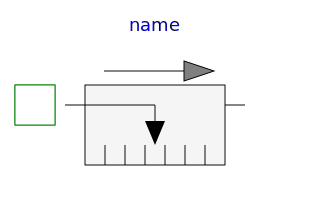

This package contains connectors and partial models for 1-dim. translational mechanical components. The components of this package can only be used as basic building elements for models.
| Name | Description |
|---|---|
| (left) 1D translational flange (flange axis directed INTO cut plane, e. g. from left to right) | |
| Flange_b | (right) 1D translational flange (flange axis directed OUT OF cut plane) |
| Support/housing 1D translational flange | |
| Adapter model to utilize conditional support connector | |
|
|
Component with two translational 1D flanges |
|
|
Partial model for a component with one translational 1-dim. shaft flange and a support used for graphical modeling, i.e., the model is build up by drag-and-drop from elementary components |
| PartialTwoFlangesAndSupport | Partial model for a component with two translational 1-dim. shaft flanges and a support used for graphical modeling, i.e., the model is build up by drag-and-drop from elementary components |
| Rigid connection of two translational 1D flanges | |
| PartialCompliant | Compliant connection of two translational 1D flanges |
| PartialCompliantWithRelativeStates | Base model for the compliant connection of two translational 1-dim. shaft flanges where the relative position and relative velocities are used as states |
|
|
Obsolete partial model. Use PartialElementaryOneFlangeAndSupport2. |
| PartialElementaryOneFlangeAndSupport2 | Partial model for a component with one translational 1-dim. shaft flange and a support used for textual modeling, i.e., for elementary models |
|
|
Obsolete partial model. Use PartialElementaryTwoFlangesAndSupport2. |
|
|
Partial model for a component with one translational 1-dim. shaft flange and a support used for textual modeling, i.e., for elementary models |
| PartialElementaryRotationalToTranslational | Partial model to transform rotational into translational motion |
| Partial model of a force acting at the flange (accelerates the flange) | |
|
|
Device to measure a single absolute flange variable |
|  PartialRelativeSensor | Device to measure a single relative variable between two flanges |
| Base model of Coulomb friction elements |